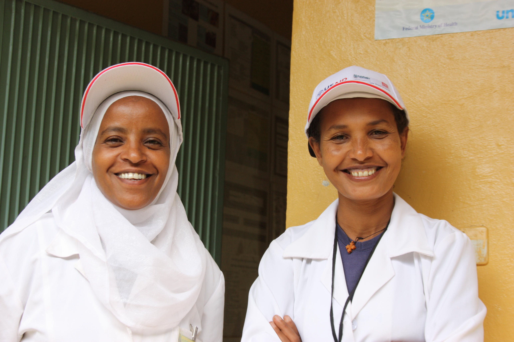

Digital accompaniment
Tools that help care teams maintain the relationship, follow the thread, and know what should happen next.

Virtual-first primary care for the systems that need it most
We build technology that helps primary care reach people where they are.
Voice-first, human-centered systems for community health, care navigation, and continuous support.
Our Vision
The next era of primary care will meet people in the rhythms of daily life: through trusted community relationships, simple channels, and accountable technology that extends the reach of care teams.
What We're Building
We are working in the broad space between households, community health workers, nurses, clinicians, and health systems. The goal is simple: make primary care feel continuous, navigable, and available before problems become crises.
Tools that help care teams maintain the relationship, follow the thread, and know what should happen next.
Interfaces that work for people who may not read, type, own a smartphone, or have airtime to spare.
Practical automation for routing, support, and follow-up, with clinical accountability built into the workflow.
How We Work
Our work begins with the reality already on the ground: households seeking advice, community health workers carrying trust, clinicians stretched thin, and systems trying to do more with less.
Strengthen the relationships people already rely on for care.
Build for low bandwidth, basic phones, shared devices, and real clinical workload.
Favor standards, interoperability, and tools that can fit into public-interest health systems.
Use AI where it makes care safer, clearer, or faster, with humans responsible for decisions.
Who We Are
Acompa brings together experience in frontline health systems, virtual-first primary care, community health platforms, machine learning, and implementation at scale.
Physician and health systems leader who has built and led care delivery programs across sub-Saharan Africa.
LinkedInComputer scientist and entrepreneur with deep experience in applied machine learning and health service infrastructure.
LinkedInDesigner of frontline health tools and AI systems for low-resource settings, including CommCare and Open Chat Studio.
LinkedInGlobal health operator focused on turning promising ideas into programs that can scale sustainably.
LinkedInThat means technology in service of accompaniment: practical tools for the people giving care, and simpler ways for households to reach the care they need.